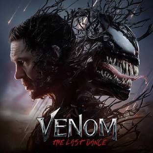

In 2018, 23 days after Thanos erased half of all life in the universe,[a] Carol Danvers rescues Tony Stark and Nebula from deep space. They reunite with the remaining Avengers—Bruce Banner, Steve Rogers, Thor, Natasha Romanoff, and James Rhodes—and Rocket on Earth. Locating Thanos on an uninhabited planet, they plan to use the Infinity Stones to reverse his actions but find that Thanos has destroyed them. Enraged, Thor decapitates Thanos.

The McCallister family is preparing to spend Christmas in Paris, gathering at Kate and Peter's home in a Chicago suburb on the night before their departure. Kate and Peter's youngest son, Kevin, is ridiculed by his siblings and cousins due to his immaturity. Kevin inadvertently ruins the family dinner after a scuffle with his oldest brother Buzz, resulting in Kate sending him up to the attic. Kevin berates his mother for allowing the rest of the family to pick on him and wishes that his family would disappear. During the night, heavy winds create a power outage, disabling the alarm clocks and causing the family to oversleep. In the confusion and rush to get to the airport, Kevin is accidentally left behind.

On the Polynesian island of Motunui, the inhabitants worship the goddess of nature, Te Fiti; a living island who, long ago, brought life to the ocean using a pounamu stone as her heart and the source of her power. One day, Maui, the shape-shifting demigod of the wind and sea and master of wayfinding, stole Te Fiti's heart to give humanity the power of creation. This caused Te Fiti to disintegrate, and Maui was attacked by Te Kā, a volcanic demon. Maui lost both the heart and his magic fish hook to the depths of the sea.

Eddie Brock and the Venom symbiote are drunk in a bar in Mexico,[a] still on the run after their recent battle with Carnage.[b] The murder of Patrick Mulligan makes international headlines with Eddie being named the prime suspect, forcing him to set out to New York City and attempt to clear his name.
Spider-Man has the secret identity of Peter Benjamin Parker. Initially, Peter was depicted as a teenage high-school student and an orphan raised by his Aunt May and Uncle Ben in New York City after his parents, Richard and Mary Parker, died in a plane crash. Lee, Ditko, and later creators had the character deal with the struggles of adolescence and young adulthood and gave him many supporting characters, such as Flash Thompson, J. Jonah Jameson, and Harry Osborn; romantic interests Gwen Stacy, Mary Jane Watson, and the Black Cat; and enemies such as Doctor Octopus, the Green Goblin, and Venom. In his origin story, Peter gets his superhuman spider powers and abilities after being bitten by a radioactive spider.